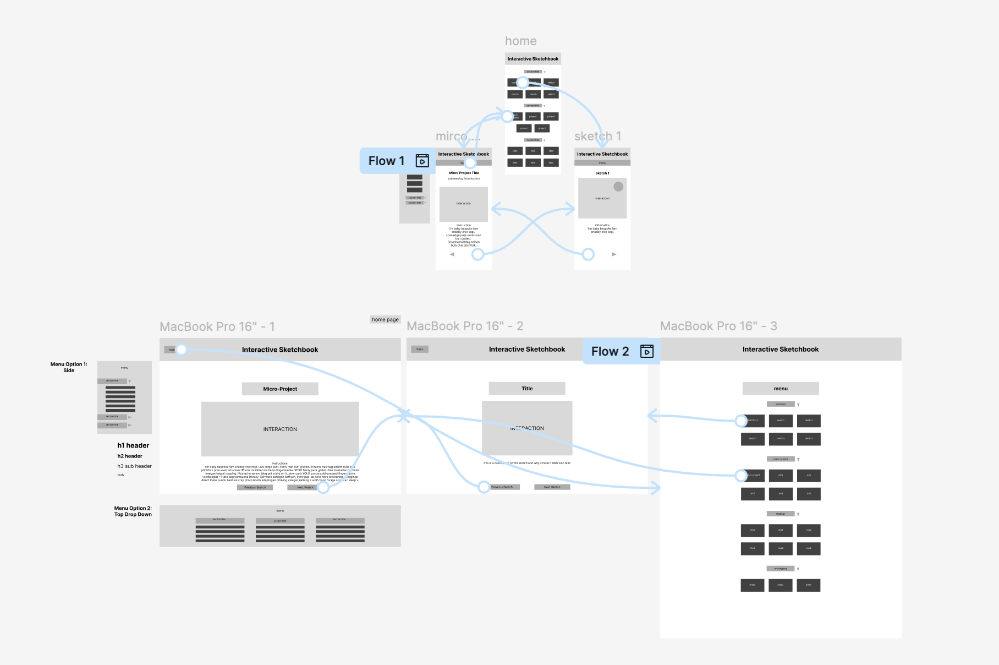

Click Here for Figma Prototype Link

My project has a straightforward navigation model, with a home page which clearly lists and links the user to all previous assignments, sketches, prototypes, and reflections that I have completed throughout this class. On each page that shows a sketch or assignment, there are arrows at the bottom of the page so the user may click through all assignments without needing to navigate back to the homepage. Eventually, there will be a drop down menu that comes up if the user needs to quickly navigate the menu without having to go all the way back to the main home page, or without having to cycle through the sketches until they land on the correct one (this feature is mainly for those who just want to meander through the work.) The title “[Megan’s] Interactive Sketchbook” will have a link that always takes you to the homepage, complying with Schiederman’s rule of permitting easy reversal of actions, should a user want to backtrack.
The hierarchy is very clear, and addresses both the second of Nielsen’s heuristics, Match Between the System and the Real World, and Norman’s concerns of easy understandability. Everything in the sketch is as it should be, where it should be. The title and link to the home page will be at the top, big and bold, and each button below it will take the user to exactly what sketch they want without hassle or confusion. The buttons are sorted by section within the menu (sketches, micro-project, readings, prototypes) for ease of navigation. The buttons will take you to each respective page immediately, and will be titled at the top of the page to comply with the first heuristic, Visibility of System Status. The signifiers, the buttons the user will use to navigate the system, will help the system to afford the user easy navigation, as per Norman’s insights.
The mobile-first set up is to ensure that whatever means are necessary for the user to appropriately, accurately, and easily navigate the system can fit within the smallest of scales first and foremost. This way, we can work our way up, adding more details where they may be wanted, but keeping the core system the same. The mobile wireframes are simple and easy to navigate, and more or less translate the same to the desktop (although the desktop wireframes may have more space to expand sketches and include intricate detail when it comes to the design.)
The buttons all lead to the same places and have the same hierarchical layout across platforms, which aids in Shneiderman’s rules of Consistency across the platforms, and Reducing Short Term Memory Load. The only issue is that the system doesn’t as easily comply with Shneiderman’s rule of Universal Usability, as the navigation system is the same for all who use it, offering no shortcuts or alternate navigation routes for expert users. Eventually, this may be worked in, but for now the system is entirely consistent across mobile and desktop wireframes, and all users can expect the same navigation experience and outcome.